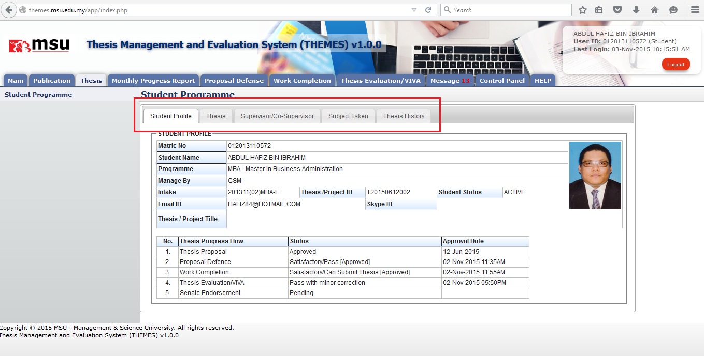

Student Profile tab contains the basic student and thesis information including its thesis progress status.

Figure 10: Student Programme Tab
Prerequisite
None
Steps
Warning
None
Note
If the user is yet to submit the thesis proposal, the section of Thesis Progress Flow will be empty. It will be updated based on the current status progress for each thesis stage.
Created with the Personal Edition of HelpNDoc: Free EBook and documentation generator